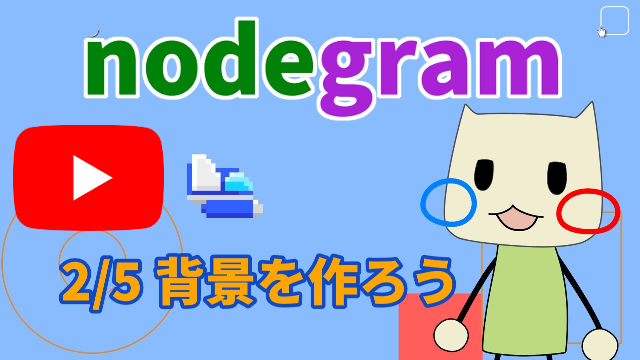
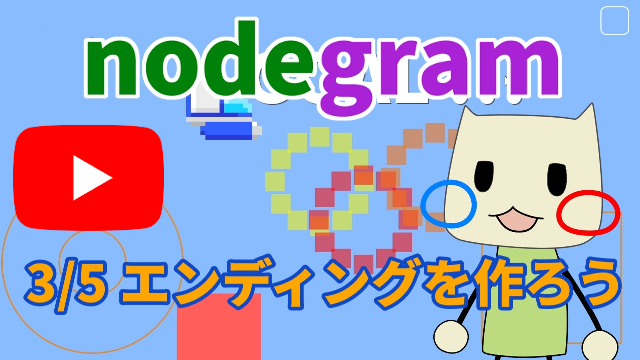
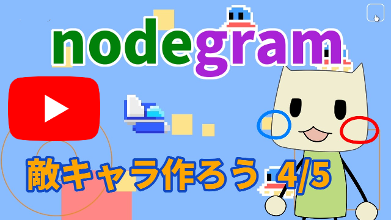
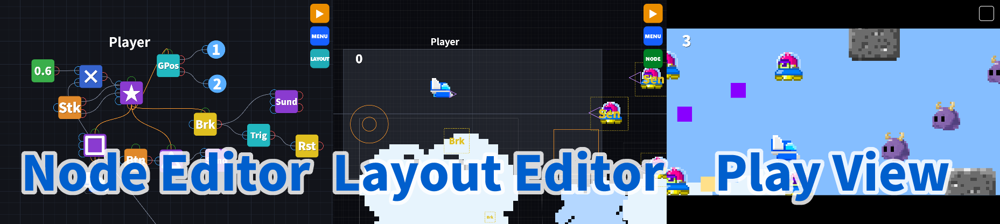

1. nodegram คืออะไร
nodegram คือเครื่องมือสำหรับเขียนโปรแกรมด้วยโหนด
เพียงต่อโหนด Stick เข้ากับโหนด Character ตัวละครก็ขยับได้แล้ว

• เขียนโปรแกรมได้ทั้งบนมือถือและบนพีซี
• ให้คนอื่นเล่นเกมที่คุณสร้างได้
• nodegram ทำงานบนเว็บ จึงเขียนโปรแกรมได้ทุกที่ที่มีอินเทอร์เน็ต (โปรแกรม nodegram หนึ่งชิ้นมีขนาดราว ๆ รูปภาพหนึ่งรูปเท่านั้น)
การเขียนโปรแกรมด้วยโหนดคือการให้ Node ติดต่อส่งข้อมูลกันเพื่อทำงานใหญ่ร่วมกัน Node (ผู้รับผิดชอบ) ทุกตัวจะทำงานของตนกับค่าที่ได้รับจากผู้รับผิดชอบคนอื่น แล้วส่งต่อให้ผู้รับผิดชอบคนถัดไป Node (ผู้รับผิดชอบ) ทุกตัวทำงานอยู่ตลอดเวลา ต่างคนต่างทำ
ในทางกลับกัน การเขียนโปรแกรมด้วยตัวอักษรทั่วไปคือผู้รับผิดชอบคนเดียวทำความเข้าใจและทำตามคำสั่งทีละคำสั่งตามลำดับ
2. วิดีโอสอนการใช้งาน
ถ้าอยากรู้จัก nodegram ผ่านวิดีโอ เริ่มจากตรงนี้ได้เลย
ดูวิดีโอของบทที่ 1 ก็จะเข้าใจวิธีใช้เกือบทั้งหมด
วิดีโอเป็นภาษาญี่ปุ่น กรุณาเปลี่ยนคำบรรยายเป็นภาษาที่คุณใช้
 |  | |
 |
3. เริ่มต้นอย่างไร

nodegram มีสามหน้าจอ ได้แก่สำหรับประกอบโปรแกรม NodeEditor
สำหรับวางออบเจ็กต์ และ Layout
Play
สำหรับรันโปรแกรม
3-1. การสร้างโหนด (NodeEditor)
- ใน NodeEditor ให้กดค้างที่พื้นหลัง (พื้นที่สีดำว่าง ๆ) จะเปิดหน้าต่าง “CREATE NEW NODE”
- เลือกโหนดที่ต้องการจากรายการ แล้วโหนดนั้นจะปรากฏใน NodeEditor
- กดค้างที่โหนด หรือดับเบิลคลิก เพื่อเปิดหน้าต่าง Property ที่ใช้ตั้งค่าโดยละเอียด
สิ่งอย่างเช่นสีของออบเจ็กต์ก็เปลี่ยนที่นี่
ไม่มีปุ่ม OK เพราะทุกการเปลี่ยนแปลงมีผลทันที ปิดหน้าต่างด้วยเครื่องหมาย × มุมขวาบน หรือแตะนอกหน้าต่าง
DUPLICATE ใช้ทำสำเนาโหนด ส่วน DELETE ใช้ลบ
- ลากโหนด (แตะแล้วเลื่อน) เพื่อย้ายตำแหน่ง
- ลากจากพอร์ตขาออกด้านขวาของโหนดไปยังพอร์ตขาเข้า (ด้านซ้ายของอีกโหนดหนึ่ง) เพื่อต่อสาย เมื่อต่อแล้ว ระหว่างรันโปรแกรมค่าจะไหลไปตามสายนั้นจากปลายสีแดงไปยังปลายสีน้ำเงิน


- โหนดที่มีขั้วอยู่ด้านบน (ขั้วลูก) สามารถต่อจากตรงนั้นไปยังขั้วแม่ (ด้านล่างของอีกโหนดหนึ่ง) ได้ ทั้งสองจะกลายเป็นคู่แม่-ลูก และลูกจะเคลื่อนที่ไปพร้อมกับแม่
เช่น ถ้าผู้เล่นยิงกระสุน ให้จุดที่กระสุนออกเป็นลูก และให้ผู้เล่นเป็นแม่

3-2. การวางออบเจ็กต์ (หน้าจอ Layout)
- กดปุ่ม “Layout” เพื่อไปยังหน้าจอ Layout
- ใน Layout คุณจะวางโหนดออบเจ็กต์ เช่น Rect, Circle, Character และ Text
รวมทั้งโหนดควบคุม เช่น Button และ Stick
- ลากออบเจ็กต์เพื่อย้าย ใช้จุดจับสีขาวที่มุมทั้งสี่เพื่อปรับขนาด และใช้จุดจับกลมด้านบนเพื่อกำหนดทิศทาง
- กด “NODE” เพื่อกลับไปยัง NodeEditor


3-3. การรันโปรแกรม (หน้าจอ Play)
- ปุ่ม ▶ (Play) ที่มุมขวาบนของ NodeEditor หรือ Layout จะพาไปยังหน้าจอ Play และเริ่มรันโปรแกรม
- กดค้างที่ปุ่ม □ (Stop) มุมขวาบนของหน้าจอ Play เพื่อหยุดและกลับไปแก้ไข
- ในหน้าจอ Play โหนดออบเจ็กต์จะถูกวาดทุก 1/60 วินาที (หนึ่งเฟรม) และเคลื่อนที่ไปพร้อมกับการคำนวณฟิสิกส์
- ควบคุมได้ด้วยการแตะหน้าจอ ใช้ JoyStick บนหน้าจอ ใช้แป้นพิมพ์ หรือใช้เมาส์

- ในหน้าจอ Play ยังแสดงแรงโน้มถ่วงได้ด้วย
หากต้องการเกมแนวพินบอลหรือมาริโอ ให้เปิด Dynamics (การคำนวณฟิสิกส์)
เพิ่มโหนด Setting แล้วเปิด Dynamics ใน Property ของมัน ฟิสิกส์จะมีผลกับทั้งโปรแกรม
โหนดออบเจ็กต์แต่ละตัวก็มีการตั้งค่า Dynamics ของตัวเองด้วย จึงต้องเปิดทีละตัว
4. สามหน้าจอ
4-1. การใช้ NodeEditor
เป็นหน้าจอสำหรับวางโหนดและต่อสายเชื่อมกัน

| การกระทำ | ผลลัพธ์ |
|---|---|
| ลากด้วยนิ้วเดียวบนพื้นหลัง | เลื่อนมุมมอง |
| หุบสองนิ้ว หรือหมุนล้อเมาส์ | ย่อ/ขยายมุมมอง |
| ดับเบิลคลิกแล้วลาก (บนพื้นหลัง) | เลือกแบบครอบกรอบ (เลือกหลายโหนด) |
| กดค้างที่พื้นหลัง | เปิด CREATE NEW NODE |
| ลากโหนด | ย้ายโหนด (ถ้าเลือกไว้หลายตัวจะย้ายพร้อมกัน) |
| ดับเบิลคลิกหรือกดค้างที่โหนด | เปิด Property (ถ้าเลือกหลายตัวจะเป็นเมนูสำหรับหลายโหนด) |
| ลากระหว่างขั้ว | ต่อสาย (เพื่อไม่ให้พลาด หลังแตะให้หยุดนิดหนึ่งแล้วค่อยลาก) |
| กดค้างที่สาย หรือดึงสายออกไปด้านนอก | ตัดการเชื่อมต่อ ลากจากขั้วออกไปด้านนอกแล้วปล่อยก็ตัดการเชื่อมต่อได้เช่นกัน |
4-2. การใช้หน้าจอ Layout
เป็นหน้าจอสำหรับกำหนดตำแหน่ง ขนาด และการหมุนของออบเจ็กต์ สี่เหลี่ยมสีเทาคือพื้นที่ที่มองเห็นตอน Play

วิธีควบคุมโดยพื้นฐานเหมือนกับ NodeEditor
| การกระทำ | ผลลัพธ์ |
|---|---|
| ลากด้วยนิ้วเดียว (พื้นหลัง) | เลื่อนมุมมอง |
| ล้อเมาส์ / หุบสองนิ้ว | ย่อ/ขยาย |
| ลากออบเจ็กต์ | ย้าย (ถ้าเลือกไว้หลายตัวจะย้ายพร้อมกัน) |
| แตะออบเจ็กต์ | เลือก การเลือกนี้ใช้ร่วมกับ NodeEditor ด้วย |
| ลากจุดจับ | ปรับขนาด / หมุน |
| ดับเบิลคลิกแล้วลาก (บนพื้นหลัง) | เลือกแบบครอบกรอบ |
| กดค้างที่พื้นหลัง | เปิด CREATE NODE |
| กดค้างที่สิ่งที่เลือกไว้ | เปิด Property (ถ้าเลือกหลายตัวจะเป็นเมนูสำหรับหลายโหนด) |
ตัวเลขนั้นคือ SortingLayer ยิ่งค่ามากยิ่งวาดไว้ด้านหน้า ยิ่งค่าน้อยยิ่งอยู่ด้านหลัง
เปลี่ยนค่าได้ด้วยปุ่ม ▲▼ ที่อยู่ด้านล่าง
นอกจากนี้โหนด SETTING ยังมีตัวเลือก GridSnap
เมื่อเปิดใช้ ออบเจ็กต์จะขยับทีละ 10 พิกเซล
ขนาดของพื้นที่สีเทาปรับได้ที่โหนด Setting
5. MENU

กดค้างที่ปุ่ม MENU มุมขวาบน แล้วเลื่อนนิ้วไปทางรายการที่ต้องการและปล่อย รายการนั้นจะทำงาน ใช้กดแบบปุ่มธรรมดาก็ได้
ปุ่ม ▶ มุมขวาบนจะพาไปยังหน้าจอ Play และเริ่มรันโปรแกรม
Layout จะพาไปยังหน้าจอ Layout
5-1. รายการในเมนู
| NEW NODE | เปิด CREATE NODE เพื่อเพิ่มโหนดใหม่ การกดค้างที่พื้นหลังก็เปิดหน้าต่างเดียวกัน |
| SAVE | บันทึกโปรแกรมปัจจุบันโดยตั้งชื่อ (ดู5-2) |
| LOAD | โหลดโปรแกรมที่บันทึกไว้ (ดู5-3) |
| UNDO | ยกเลิกการกระทำล่าสุด |
| REDO | ทำซ้ำการกระทำที่ยกเลิกไป |
| FIT | ปรับการซูมและตำแหน่งให้โหนดทั้งหมดพอดีกับหน้าจอ |
| NEW | ลบทั้งหมดแล้วเริ่มโปรแกรมใหม่ |
| SETTING | เปิดการตั้งค่าของตัวแอปเอง (ดู5-4) ซึ่งเป็นคนละอย่างกับโหนด SETTING |
| OPEN HELP | เปิดหน้าช่วยเหลือนี้ |
ขณะที่แก้ไขอยู่ภายใน Compo รายการทางซ้ายจะเปลี่ยนเป็นรายการสำหรับ Compo ซึ่งอธิบายไว้ในบท “โหนด Compo”
5-2. SAVE (การบันทึก)
บันทึกโปรแกรมโดยตั้งชื่อไว้ในเครื่องนี้ ถ้ามีชื่อเดิมอยู่แล้วจะถูกเขียนทับ ชื่อใช้ตัวอักษรละติน ตัวเลข และสัญลักษณ์บางตัวได้
AUTO จะเปิดการบันทึกอัตโนมัติ หลังจากนั้นโปรแกรมจะถูกบันทึกทุก 30 วินาที (ไม่บันทึกระหว่าง Play)
EXPORT จะส่งออกโปรแกรมเป็นไฟล์ สะดวกสำหรับสำรองข้อมูลหรือส่งให้ผู้อื่น
เลือกรูปแบบได้ระหว่าง .ngz (บีบอัดแบบ gzip) กับ .json (ข้อความ)
เพียงเปลี่ยนนามสกุลของไฟล์ .ngz เป็น .gz โปรแกรมแตกไฟล์ทั่วไปก็ดึง JSON ออกมาได้
บันทึกได้สูงสุด 256 รายการ ข้อมูลเก็บอยู่ในเบราว์เซอร์ที่ใช้ จึงมองไม่เห็นจากเครื่องอื่นหรือเบราว์เซอร์อื่น
ข้อมูลที่บันทึกอยู่ภายใน nodegram หากลบทางลัด nodegram ออกจากมือถือ ข้อมูลอาจหายไปด้วย
สำหรับสิ่งสำคัญ ควรใช้ EXPORT แล้วเก็บเป็นไฟล์ไว้
5-3. LOAD (การโหลด)
แสดงรายการโปรแกรมที่บันทึกไว้ ปุ่มข้างชื่อแต่ละรายการใช้ลบได้ด้วย
IMPORT ใช้โหลดไฟล์ที่ส่งออกไว้ก่อนหน้า การโหลดมีสองแบบ คือ โหลด ซึ่งแทนที่เนื้อหาปัจจุบัน กับ โหลดเพิ่ม ซึ่งคงโปรแกรมที่ทำอยู่ไว้แล้วต่อไฟล์เข้าไปข้างใต้
หากนำเข้าไฟล์ .obj ที่สร้างจากซอฟต์แวร์ 3 มิติ ข้อมูล 3 มิติจะถูกอ่านเป็นโหนด POLYGON หรือเป็นโหนด ARRAY ที่ต่อกับโหนด LINE (การแสดงผลแบบ 3 มิติ) รายละเอียดดู11-12. ออบเจ็กต์ 3 มิติ
5-4. SETTING (การตั้งค่าแอป)
การตั้งค่าของตัวแอปเอง สิ่งที่เปลี่ยนที่นี่จะไม่ถูกบันทึกลงในโปรแกรม แต่คงอยู่เฉพาะในเครื่องนี้
Wire：เลือกรูปแบบของสาย (เส้นโค้ง／เส้นตรง)
NodeColor：เลือกสีของโหนด
Language：เปลี่ยนภาษาที่แสดง
ญี่ปุ่น อังกฤษ จีน (ตัวย่อ) ฝรั่งเศส เยอรมัน ฮินดี อินโดนีเซีย อิตาลี เกาหลี โปรตุเกส รัสเซีย สเปน ไทย ตุรกี และเวียดนาม
การตั้งค่าของแต่ละฉาก เช่น FPS หรือ Dynamics ไม่ได้อยู่ที่นี่ แต่อยู่ที่โหนด SETTING ชื่อคล้ายกันมาก อย่าสับสน
6. บนมือถือและบนพีซี
บนมือถือ
- การควบคุมด้วยการสัมผัส:
เลื่อนด้วยนิ้วเดียว ขยายด้วยการหุบสองนิ้ว การกดค้าง การแตะสองครั้งแล้วลาก และอื่น ๆ ทำงานเหมือนบนพีซี
- การหมุนหน้าจอ:
มุมมองจะหมุนตามทิศทางของเครื่อง ระหว่าง Play จะใช้ทิศทางที่กำหนดไว้ในโหนด SETTING (แนวนอน=Horizontal／แนวตั้ง=Vertical) หากถือเครื่องกลับด้านจะมีข้อความแจ้ง - ข้อแนะนำสำหรับ iOS:
บนอุปกรณ์ iOS อย่าง iPhone ให้เปิดเมนูของ Safari แล้วแตะ ① และ ② เพื่อซ่อนแถบเครื่องมือ จะได้ภาพเกือบเต็มจอและใช้ nodegram ได้สบายขึ้นมาก
หากต้องการเต็มจอจริง ๆ ให้เปิดเมนูแชร์ของ Safari แล้วเลือก “เพิ่มไปยังหน้าจอโฮม” nodegram จะทำงานเหมือนแอป ซึ่งเราแนะนำวิธีนี้
พึงระวังว่าการลบไอคอนนั้นออกจากหน้าจอโฮมอาจทำให้ข้อมูลที่บันทึกไว้หายไปด้วย ให้ Export สิ่งสำคัญไปเก็บไว้ในโฟลเดอร์ของเครื่อง

บนพีซี
- ปุ่มลัด:
ใช้ได้ทั้งใน NodeEditor และ Layout
ปุ่ม การทำงาน DeleteหรือBackspaceลบโหนดที่เลือกไว้ (มีหน้าต่างยืนยัน) Ctrl+D(บน Mac คือ Cmd+DCmd+D)ทำสำเนาโหนดที่เลือกไว้ (มีหน้าต่างยืนยัน) Ctrl+ZUndo Ctrl+Y หรือ Ctrl+Shift+ZRedo
เมื่อเปิดตัวแก้ไข TEXTURE อยู่ (เพิ่มเติมจากข้างต้น)ปุ่ม การทำงาน Ctrl+Vวางรูปภาพจากคลิปบอร์ด Ctrl+Cคัดลอกเท็กซ์เจอร์ที่กำลังแก้ไขทั้งหมดไปยังคลิปบอร์ด Ctrl+Zย้อนกลับในตัวแก้ไขเท็กซ์เจอร์ Ctrl+Y หรือ Ctrl+Shift+Z ทำซ้ำในตัวแก้ไขเท็กซ์เจอร์
รองรับ Mac ด้วย
7. คำอธิบายโหนด

In/Out หมายถึงจำนวนขั้วขาเข้า／จำนวนขั้วขาออก
ค่าคงที่
| โหนด | ขาเข้า/ขาออก | คำอธิบาย |
|---|---|---|
| Constant | 0/1 | ส่งออกตัวเลขที่ตั้งไว้ใน Value |
การคำนวณ
| โหนด | In/Out | คำอธิบาย |
|---|---|---|
| ＋ | 2/1 | ส่งออกผลของ ขาเข้า① ＋ ขาเข้า② ไม่จำเป็นต้องมีโหนดบวกเสมอไป เพราะขั้วขาเข้าหนึ่งขั้วรับสายได้หลายเส้นและบวกกันเองอยู่แล้ว ต่อสองสายเข้าที่ขาเข้า① ก็ได้ผลรวมของทั้งสองแล้ว |
| － | 2/1 | ส่งออกผลของ ขาเข้า① － ขาเข้า② |
| × | 2/1 | ส่งออกผลของ ขาเข้า① × ขาเข้า② |
| ÷ | 2/1 | ส่งออกผลของ ขาเข้า① ÷ ขาเข้า② ถ้าตัวหารเป็น 0 จะส่งออก 0 |
| √ | 1/1 | ส่งออกรากที่สองของขาเข้า① ถ้าขาเข้าเป็น 0 หรือน้อยกว่าจะส่งออก 0 |
| Compare | 2/1 | เปรียบเทียบขาเข้า① กับขาเข้า② (=, >, <, ≠, ≥, ≤) ถ้าเงื่อนไขเป็นจริงจะส่งออก 1 ถ้าไม่จริงจะส่งออก 0 |
| Not ( ! ) | 1/1 | ส่งออก 1 ถ้าขาเข้า① เท่ากับ 0 นอกนั้นส่งออก 0 |
| And | 2/1 | หากอินพุต 1 และอินพุต 2 ไม่เป็น 0 ทั้งคู่ จะส่งออก 1 มิฉะนั้นส่งออก 0 |
| Or | 2/1 | หากอินพุต 1 หรืออินพุต 2 ตัวใดตัวหนึ่งไม่เป็น 0 จะส่งออก 1 ถ้าเป็น 0 ทั้งคู่จะส่งออก 0 |
| Pos Angle | 2/1 | จากตำแหน่งเป็นมุม ส่งออก ArcTan2(ขาเข้า②, ขาเข้า①) เป็นองศา |
| Angle Pos | 1/2 | จากมุมเป็นตำแหน่ง ส่งออก (cos, sin) ของมุมที่กำหนดเป็นองศา |
| Random | 1/1 | ส่งออกจำนวนเต็มสุ่มตั้งแต่ 0 จนถึงน้อยกว่า Number ค่าจะถูกสุ่มใหม่เมื่อเริ่ม Play และในทุกเฟรมที่ขาเข้า① ไม่เป็นศูนย์ หากเปิด Use Seed และกำหนดค่า Seed ทุกครั้งที่ Play จะได้ลำดับเดิมซ้ำ |
| Int | 1/1 | ทำให้เป็นจำนวนเต็ม คุณสมบัติ Round เลือกได้ระหว่าง Floor / Round / Integer Floor (ค่าเริ่มต้น) เลือกจำนวนเต็มที่ใกล้ที่สุดซึ่งไม่เกินค่าขาเข้า เช่น 2.8 กลายเป็น 2 และ -0.1 กลายเป็น -1 ส่วน Round ปัดไปยังค่าที่ใกล้ที่สุด และ Integer เก็บเฉพาะส่วนที่เป็นจำนวนเต็ม |
ค่าและเวลา
| โหนด | In/Out | คำอธิบาย |
|---|---|---|
| Trigger | 1/1 | ส่งออก 1 เพียงหนึ่งเฟรม ในจังหวะที่ขาเข้าเปลี่ยนจาก 0 ไปเป็นค่าอื่น DELAY(F) จะหน่วงเลข 1 นั้นออกไปตามจำนวนเฟรมที่กำหนด |
| Counter | 2/1 | ตัวนับ ในแต่ละเฟรมจะบวกขาเข้า① ลบขาเข้า② แล้วส่งออกค่าที่เก็บไว้ Type＝Clamp จะคุมค่าไว้ระหว่าง Min กับ Max ส่วน Loop จะวนค่าอยู่ในช่วงนั้น ตั้งค่า Value (ค่าเริ่มต้น) Min และ Max ได้ |
| Var | 2/1 | ใช้เป็นตัวแปร เก็บตัวเลขหนึ่งค่าไว้แล้วส่งออก เมื่อสัญญาณเซ็ตที่ขาเข้า② ไม่เป็นศูนย์ จะจดจำค่าขาเข้า① กำหนดค่าเริ่มต้นได้ |
| Array | 3/1 | โหนดที่ใช้เป็นอาร์เรย์ได้ ระบุดัชนี (ตำแหน่งในอาร์เรย์ ตัวแรกคือ 0) ที่อินพุต 2 แล้วจะส่งค่าของอาร์เรย์ออกมา ดัชนีเริ่มจาก 0 อาร์เรย์ยาว 3 จึงมีดัชนี 0, 1 หรือ 2 ถ้าระบุน้อยกว่า 0 หรือตั้งแต่ 3 ขึ้นไปจะถือว่าไม่มีค่าและคืน 0 สัญญาณ set ที่อินพุต 3 จะเขียนทับค่าของอินพุต 1 ลงในสมาชิกของอาร์เรย์ที่ดัชนีของอินพุต 2 ในรายการค่าเริ่มต้น ให้คั่นตัวเลขหลายตัวด้วย “,” (จุลภาค) หรือขึ้นบรรทัดใหม่ Array เข้าถึงพร้อมกันได้ เช่น อ่านข้อมูลตัวที่ 1 และตัวที่ 3 พร้อมกับตั้งค่าข้อมูลตัวที่ 2 ในเวลาเดียวกัน กรณีนี้ให้ต่อ Array หลายตัวเป็นพ่อแม่และลูก ใน Array ที่ต่อแบบพ่อแม่-ลูก ตัวที่มีค่าของอาร์เรย์จริงๆ มีเพียง Array บนสุดเท่านั้น Array ที่อยู่ข้างล่างเป็นเพียงอินเทอร์เฟซสำหรับเข้าถึง Array พ่อแม่ ถ้ามีการเขียนพร้อมกัน พ่อแม่จะได้ก่อน มีเพียง Array บนสุดเท่านั้นที่ต่อกับ LINE / VOICE / SOUND ได้ อาร์เรย์ใช้ร่วมกับโหนด Sound และ Voice เป็นเหมือนโน้ตเพลง หรือใช้ร่วมกับโหนด Line เพื่อแสดงเส้นหักได้ Array ตัวเดียวใช้ร่วมกับ Line หลายตัวได้ ปุ่ม SEQUENCER / LINE ใน Property จะเปิดตัวแก้ไขโน้ตและตัวแก้ไขกราฟิก (บทที่ 8) นอกจากนี้ยังเป็นที่เก็บโครงลวด 3 มิติด้วย (ดู 11-12. ออบเจ็กต์ 3 มิติ ) |
| GetPos | 0/2 | อ่านตำแหน่ง X และ Y ปัจจุบันของออบเจ็กต์แม่ สลับระหว่าง WORLD กับ LOCAL ได้ |
| GetRot | 0/1 | ส่งออกมุมปัจจุบันของออบเจ็กต์แม่ โดยทวนเข็มนาฬิกาเป็นบวก สลับระหว่าง WORLD กับ LOCAL ได้ |
| Velocity | 0/2 | ส่งออกความเร็ว X และ Y ต่อวินาทีของออบเจ็กต์แม่ (Y เป็นบวกเมื่อขึ้นบน) ยิ่งตั้ง Frames มาก ยิ่งเฉลี่ยจากหลายเฟรมและค่าจะเปลี่ยนอย่างนุ่มนวลขึ้น |
เนื้อหาของ Array แก้ไขได้ด้วยตัวแก้ไขเฉพาะ ปุ่ม SEQUENCER ใน Property แก้เป็นโน้ตเพลง ส่วนปุ่ม LINE แก้เป็นเส้นหัก วิธีใช้ดูที่ 8. ตัวแก้ไข
การแสดงผลและออบเจ็กต์
| โหนด | In/Out | คำอธิบาย |
|---|---|---|
| Text | 2/0 | แสดงข้อความ ถ้าไม่ได้ต่ออะไรจะแสดงข้อความในคุณสมบัติ Text แต่ถ้าต่อสายไว้จะแสดงค่านั้น ขาเข้า② ใช้เปิด/ปิดการแสดงผล ตัวเลขจะถูกปัดที่ทศนิยมตำแหน่งที่หกและแสดงถึงตำแหน่งที่ห้า ตั้งค่าสีตัวอักษร การจัดวาง และกรอบรอบ ๆ ได้ |
| Rect | 3/0 | ออบเจ็กต์สี่เหลี่ยมผืนผ้า ถ้า Dynamics Off อินพุต 1/2 คือพิกัด xy ถ้า Dynamics On คือแรงภายนอก x,y อินพุต 3 เปิด/ปิดการแสดงผล ตั้งค่าสี ขอบ Tag ขนาด การหมุน Sorting Layer ฯลฯ ได้ Broken by 1～3 ใส่ My Tag ของอีกฝ่ายที่ทำลายออบเจ็กต์นี้ได้ เรื่อง Dynamics และ Tag ดูที่ 11. ข้อกำหนด |
| Circle | 3/0 | ออบเจ็กต์วงกลม นอกจากรูปทรงและคุณสมบัติ Radius แล้ว ขาเข้าและคุณสมบัติเหมือนกับ RECT |
| Character | 3/0 | ตัวละครที่เคลื่อนที่และกระโดดได้ อินพุต 1/2 คือความเร็วในการเคลื่อนที่ อินพุต 3 คือการกระโดดในจังหวะที่เปลี่ยนจาก 0 หรือน้อยกว่าเป็นค่าบวก แรงกระโดดแปรผันตามค่าอินพุต และใช้ได้เฉพาะตอนแตะพื้น ถ้าจะใช้ฟิสิกส์และการกระโดด ต้องเปิด Dynamics ทั้งใน SETTING และ Character สำหรับเกมมุมมองจากด้านบน เปิด Dynamics ไว้แล้วตั้ง Gravity เป็น 0 ได้ Flip พลิกเทกซ์เจอร์ซ้ายขวาตามทิศ AutoRot หมุนหน้าตัวละครไปตามทิศที่เคลื่อนที่อัตโนมัติ KeepOnScr จำกัดการเคลื่อนที่ให้อยู่ในหน้าจอ มีขั้วลูก แต่เป็นลูกของออบเจ็กต์ไม่ได้ ที่กำหนดเป็นพ่อแม่ได้มีเพียง WARP IN |
| Shot | 1/1 | ขาเข้า① ใช้ยิงกระสุน Bullet Count คือจำนวนกระสุนที่มีอยู่พร้อมกันได้ My Tag จะทำลายสิ่งที่มี Broken by ตรงกัน ส่วน Broken by 1〜3 ของโหนด SHOT เองใช้ระบุว่ากระสุนของมันจะหายไปเมื่อชนกับอะไร โดยระบุตามชนิดโหนดหรือ Tag ขาออกจะเป็น 1 เฉพาะในเฟรมที่ยิงจริงเท่านั้น Keep Off-Screen จะคงกระสุนที่อยู่นอกจอไว้ และเมื่อเกินขีดจำกัด กระสุนเก่าสุดจะหายไปก่อน |
| Line | 5/0 | วาดเส้นจาก (X1,Y1) ไปยัง (X2,Y2) ถ้าต่ออินพุต 5 (SET) ไว้ จะอัปเดตรูปเมื่อได้ค่าที่ไม่ใช่ 0 และคงรูปเดิมไว้ขณะเป็น 0 ถ้าไม่ได้ต่อจะอัปเดตทุกเฟรม ถ้ากำหนด ARRAY เป็นลูก จะไม่สนใจอินพุต 1～4 แล้วอ่านอาร์เรย์เป็น x1,y1,x2,y2,… วาดเป็นเส้นหักต่อเนื่องเส้นเดียว x=9999, y=9999 ใช้ตัดเส้น Coord เลือก WORLD/LOCAL ได้ ถ้า ARRAY ลูกเป็นข้อมูล 3 มิติ (ชุด x,y,z) จะวาดเป็น 3D LINEโดยอัตโนมัติ รายละเอียดดูตัวแก้ไข LINE ใน บทที่ 8 |
| Sound | 4/2 | อินพุต 1 คือสัญญาณเล่น อินพุต 2 คือระดับเสียง (โด=0, เร=1…) อินพุต 3 คือความดัง ถ้าไม่ได้ต่ออินพุต 2/3 จะใช้พร็อพเพอร์ตี Tone/Volume เสียงต่อเนื่องจะดังตลอดที่ Signal (อินพุต 1) ไม่เป็น 0 เสียงที่ค่อยๆ จางและเอฟเฟกต์จะดังหนึ่งครั้งที่ขอบขาขึ้นของ Signal หรือเมื่อระดับเสียงเปลี่ยน ระดับเสียง 99 คือตัวหยุด พร็อพเพอร์ตี Tone ปรับทีละ 0.5 (ครึ่งเสียง) แต่อินพุต 2 ใช้ค่าทศนิยมต่อเนื่องได้ เปิด Chromatic แล้ว Tone จะเป็นตัวเลขครึ่งเสียงแบบ 12 เสียง (0=โด, 1=โด#, 2=เร…) ถ้าปิดจะเป็นบันไดเสียง 7 ขั้นและ 0.5 คือคีย์ดำ เมื่อต่อ Array เป็นระดับเสียง ให้ตั้งให้ตรงกับ Chromatic ใน SEQUENCER ของ Array นั้น ถ้าไม่ตรงเสียงจะเพี้ยน อินพุต 4 Pan กำหนดสมดุลสเตอริโอซ้าย/ขวาระหว่าง −1 ถึง +1 ต่อ Array เป็นลูกโดยตรงแล้ว Sound นี้จะเล่นโน้ตเอง เมื่อนั้นจะมีพร็อพเพอร์ตี Tempo (BPM) และ Loop เพิ่มขึ้น และอินพุต 2 จะไม่ใช่ระดับเสียงแต่เป็นค่าทรานสโพส (1 = ครึ่งเสียง) เอาต์พุต 1 คือสัญญาณที่ติดหนึ่งเฟรมเมื่อเล่นจบ เอาต์พุต 2 คือจำนวนวินาทีนับจากเริ่มเล่น ใช้ประสานโหนดอื่นให้ตรงกับดนตรี อินพุต 1 สั่งเล่น เป็น 0 จะหยุด และเมื่อกลับเป็นค่าที่ไม่ใช่ 0 จะเล่นใหม่ตั้งแต่ต้น สมาชิก 90 ของ Array คือเส้นโยงที่หมายถึง “ต่อเสียงโน้ตก่อนหน้า” ใช้แยกว่าระดับเสียงเดิมเป็นการกดใหม่หรือลากยาว กดปุ่ม “Sequencer” ของ Array ที่ต่อกับ Sound เพื่อแก้ไขโน้ต รายละเอียดดู Sequencer ใน บทที่ 8 |
| Voice | 3/2 | โหนดที่อ่านออกเสียงคานะภาษาญี่ปุ่น เขียนฮิรางานะ (คาตาคานะก็ได้) ในพร็อพเพอร์ตี Line แล้วจะสังเคราะห์เสียงและเล่นทันที (การสังเคราะห์แบบฟอร์แมนต์) อินพุต 1 คือสัญญาณเล่น ขอบขาขึ้นจะเริ่มอ่านตั้งแต่ต้น และเมื่อกลับเป็น 0 จะหยุดแม้อ่านค้างอยู่ อินพุต 2 คือความดัง เอาต์พุต 1 คือสัญญาณที่ติดหนึ่งเฟรมเมื่ออ่านจบ เอาต์พุต 2 คือจำนวนวินาทีนับจากเริ่มเล่น หารวินาทีด้วยความยาวหนึ่งคอลัมน์จะรู้ว่า “ตอนนี้โน้ตตัวไหน” ใช้ประสานดนตรีประกอบหรือคำบรรยายกับเสียงร้อง โน้ตตัวที่เท่าไรคำนวณได้จาก “Time × BPM ÷ 30” เสียงของ Voice เลือกได้จาก Girl / Boy / Woman / Man / Child / Plain / Robot ส่วน Pitch ปรับขึ้นลงทีละครึ่งเสียง อินพุต 3 Pan กำหนดสมดุลสเตอริโอซ้าย/ขวาระหว่าง −1 ถึง +1 ต่อ Array เป็นลูกแล้วจะกลายเป็นการร้องเพลง คานะจะถูกแจกให้โน้ตทีละตัวเพื่อร้อง และ Tempo (BPM) กำหนดความเร็ว ถ้าไม่มี Array จะใช้ Speed (มิลลิวินาทีต่อคานะหนึ่งตัว) กำหนดความเร็วการพูดแทน Tempo กฎการแจกคือโน้ตหนึ่งตัวต่อคานะหนึ่งตัว เส้นโยง (90) และตัวหยุด (99) ไม่ใช้คานะ เวลาร้องจะข้าม “、” และ “。” เครื่องหมายเสียงยาว “ー” ใช้โน้ตของตัวเองหนึ่งตัว และย้ายไปยังระดับเสียงอื่นโดยคงสระก่อนหน้าไว้ได้ (เลกาโต) ถ้าคานะไม่พอกับโน้ต โน้ตนั้นจะกลายเป็น “·” สีแดงและไม่มีเสียง แก้เนื้อร้องในพร็อพเพอร์ตีของ Voice และแก้ระดับเสียงใน SEQUENCER ของ Array ทั้งสองฝั่งสลับไปมาได้ด้วยปุ่ม → ARRAY ／ → VOICE รายละเอียดดู Sequencer ใน บทที่ 8 |
| Polygon | 7/0 | ออบเจ็กต์ที่แสดงพื้นผิว (โพลิกอน) ของโมเดล 3 มิติ สร้างจาก CREATE NEW NODE ไม่ได้ จะเกิดขึ้นเฉพาะเมื่อ IMPORT ไฟล์ .obj มีอินพุตเป็นพิกัดตำแหน่ง 3 มิติ การหมุน 3 มิติ และสเกล รายละเอียดดูที่ 11-12. ออบเจ็กต์ 3 มิติ |
การควบคุม
| โหนด | In/Out | คำอธิบาย |
|---|---|---|
| Stick | 1/2 | จอยสติ๊กบนหน้าจอ ความเอียงแนวนอนของก้านคือขาออก① แนวตั้งคือขาออก② เลือกเป็นอนาล็อกหรือดิจิทัลได้ และกำหนดให้แป้นพิมพ์หรือเกมแพดได้ |
| Button | 1/1 | ปุ่มเสมือน เป็น 1 ขณะกดค้าง ผูกกับคีย์บอร์ด/เกมแพดได้ โหนด Button ติดอยู่กับหน้าจอ แต่ถ้ากำหนดพ่อแม่จะติดอยู่กับออบเจ็กต์นั้นแทน |
| Keyboard | 0/1 | ส่งออก 1 ตราบที่ยังกดปุ่มที่กำหนดไว้ |
| Touch | 0/3 | การแตะหน้าจอ ค่า X ของจุดที่แตะคือขาออก① และ Y คือขาออก② (จุดกลางคือ 0,0) ส่วนขาออก③ จะเป็น 1 ตราบที่ยังแตะหน้าจออยู่ |
โหนดอื่น ๆ
| โหนด | In/Out | คำอธิบาย |
|---|---|---|
| TEXTURE | 1/0 | เก็บภาพพิกเซลที่คุณวาดเอาไว้ แล้วแปะลงบนออบเจ็กต์ที่ตั้งเป็นแม่ แปะได้กับ Rect, Circle, Chara, Shot และ BG และมีแม่ได้หลายตัว (โหนดออบเจ็กต์หลายตัว) ถ้าขาเข้าเป็น 0 จะซ่อนไว้ หากต่อเท็กซ์เจอร์หลายตัวเข้ากับออบเจ็กต์เดียวแล้วเปิด Visible ไว้ตัวเดียว ก็สลับเท็กซ์เจอร์ที่แสดงได้ เลือกได้ว่าจะให้ภาพพอดีกับออบเจ็กต์ หรือปูซ้ำแบบกระเบื้อง หากไม่ตั้งแม่ ก็แสดงเท็กซ์เจอร์เดี่ยว ๆ เป็นภาพแบนได้เช่นกัน เมื่อต้องใช้ภาพเดียวกันหลายที่ เช่น ฉากหลัง เท็กซ์เจอร์ตัวเดียวก็กำหนดให้ออบเจ็กต์หลายตัวได้ วิธีใช้ตัวแก้ไขเท็กซ์เจอร์โดยละเอียดดู“ตัวแก้ไข TEXTURE” |
| SENSOR | 0/1 | ส่งออกจำนวนออบเจ็กต์ที่สัมผัสกับพื้นที่เซ็นเซอร์ (ขอบเขตที่กำหนดในหน้าจอ Layout) ออบเจ็กต์จะถูกนับเมื่อตรงกับเงื่อนไข Target หรือตรงกับ Tag 1〜3 ข้อใดข้อหนึ่ง และนับออบเจ็กต์หนึ่งตัวเพียงครั้งเดียวแม้จะตรงหลายเงื่อนไข หาก Target=SCREEN จะส่งออก 0 หรือ 1 ตามว่าพื้นที่เซ็นเซอร์ทับกับหน้าจอที่มองเห็นอยู่หรือไม่ หากตั้งแม่ไว้ เซ็นเซอร์จะเคลื่อนที่ตามแม่ และตัวแม่เองจะไม่ถูกตรวจจับ |
| ONBREAK | 1/1 | ส่งออกจำนวนออบเจ็กต์พ่อแม่หรือออบเจ็กต์ที่มี Tag ตามที่กำหนด ซึ่งถูกทำลายในเฟรมปัจจุบัน กำหนดออบเจ็กต์พ่อแม่ได้หลายตัว ถ้าโหนด Onbreak ไม่ได้กำหนดเป้าหมายที่เฝ้าดู จะใช้เป็นโหนดเอฟเฟกต์ได้ เมื่ออินพุต 1 เปลี่ยนจาก 0 เป็นค่าที่ไม่ใช่ 0 ก็จะแสดงเอฟเฟกต์ที่ตำแหน่งของโหนดและเพิ่มเอาต์พุตของเฟรมนั้นขึ้น 1 (จึงใช้แบบไม่มีพ่อแม่หรือ Tag เช่น ให้เรืองแสงด้วยอินพุตพร้อมกับเล่นเสียงได้) ตั้งค่าชนิดเอฟเฟกต์ (NONE, PARTICLE, LINE, CIRCLE, BOX) และสีได้ |
| ROTATE | 1/0 | บานพับสำหรับหมุนกลุ่มออบเจ็กต์แม่-ลูก ออบเจ็กต์ที่ตั้ง ROTATE เป็นแม่จะรับตำแหน่งและการหมุนของมันมา ขาเข้า① คือส่วนต่างของการหมุนจากมุมเริ่มต้นที่ตั้งไว้ใน Layout และค่าบวกจะหมุนทวนเข็มนาฬิกา |
| SCREEN | 3/2 | ควบคุมกล้องระหว่าง Play X/Y คือตำแหน่งกล้อง (ถ้ามีแม่ จะเป็นส่วนต่างจากแม่ โดย Y เป็นบวกขึ้นบน) ส่วน S คืออัตราขยายซึ่งต่ำสุดคือ 0.05 ออบเจ็กต์ที่ตั้ง SCREEN เป็นแม่จะกลายเป็น HUD ที่ตรึงอยู่กับที่และไม่ได้รับผลจากกล้อง
ถ้าตั้งออบเจ็กต์ของผู้เล่นเป็นแม่ของ SCREEN มุมมองจะเคลื่อนตามผู้เล่น |
| RESTART | 1/1 | เมื่อขาเข้าเปลี่ยนจาก 0 ไปเป็นค่าอื่น โปรแกรมทั้งหมดจะกลับสู่สถานะตอนเริ่ม Play ตำแหน่ง ตัวแปร ตัวนับ อาร์เรย์ กระสุน และอื่น ๆ จะถูกตั้งค่าใหม่ ค่าที่ทำให้เริ่มใหม่จะยังคงอยู่ที่ขาออกหลังจากนั้น จึงสะดวกสำหรับสืบทอดจำนวนชีวิตหรือคะแนน |
| COMPO | 3/3 | ชิ้นส่วนที่รวมหลายโหนดเป็นหนึ่งเดียว E＝เปิด/ปิดการทำงาน, 1・2＝รับส่งค่ากับภายใน รายละเอียดของโหนด Compo ดูที่ 9. โหนด Compo |
- ตัวแก้ไข TEXTURE：
เปิดจากปุ่ม “Edit Texture” ใน Property ของโหนด TEXTURE วิธีใช้ดูที่ 8. ตัวแก้ไข
วาร์ป
| โหนด | In/Out | คำอธิบาย |
|---|---|---|
| WARP IN | 1/0 | “ทางเข้า” ของกลไกที่ย้ายออบเจ็กต์ไปที่อื่นทันที เป้าหมายคือออบเจ็กต์ที่กำหนดเป็นลูก เมื่ออินพุตได้ค่าที่ไม่ใช่ 0 ออบเจ็กต์ลูกจะย้ายไปยังตำแหน่งและมุมของ WARP OUT ที่มี Index เดียวกัน ตราบที่ยังได้ค่าที่ไม่ใช่ 0 อยู่ จะถูกตรึงไว้ที่นั่น เมื่อเป็น 0 จะหลุดจากการตรึงและกลับมาเคลื่อนที่ได้อิสระ พร็อพเพอร์ตีมีเพียง Index ใส่ไว้ใน Compo ไม่ได้
ปุ่ม Next IN สลับไปที่ Property ของ WARP IN ตัวถัดไปที่มีดัชนีเดียวกัน ปุ่ม To OUT สลับไปที่ Property ของ WARP OUT ที่มีดัชนีเดียวกัน |
| WARP OUT | 0/0 | “ทางออก” ของวาร์ป ออบเจ็กต์ที่ส่งมาจาก WARP IN ที่มี Index เดียวกันจะย้ายมาที่ตำแหน่งและมุมนี้ พร็อพเพอร์ตีมีเพียง Index ในหน้าจอ Layout ย้ายตำแหน่งและหมุนได้ (ไม่มีขนาดจึงปรับขนาดไม่ได้) กำหนดออบเจ็กต์เป็นพ่อแม่ให้เคลื่อนไปด้วยกันก็ได้ ใส่ไว้ใน Compo ไม่ได้
ปุ่ม To IN สลับไปที่ Property ของ WARP IN ที่มีดัชนีเดียวกัน |
สัญญาณ
| โหนด | In/Out | คำอธิบาย |
|---|---|---|
| IN | 1/0 | ใช้เมื่อต้องการต่อสายเอาต์พุตของโหนดไปไกลๆ สัญญาณที่ต่อเข้าโหนด IN จะออกที่โหนด OUT ที่มีดัชนีเดียวกัน สร้างโหนด IN ที่มีดัชนีเดียวกันหลายตัวไม่ได้ ถ้าระบุดัชนีของโหนด Compo ก็ใช้เข้าถึงภายใน Compo ได้ด้วย ปุ่ม Next IN สลับไปที่ Property ของโหนด IN ตัวถัดไปที่มีดัชนีเดียวกัน ปุ่ม To OUT สลับไปที่โหนด OUT ที่มีดัชนีเดียวกัน ตั้งชื่อเพื่อแสดงชื่อแทนดัชนีได้ด้วย เรื่องโหนด Compo ดูที่ 9. โหนด Compo |
| OUT | 0/1 | ใช้เมื่อต้องการต่อสายเข้าอินพุตของโหนดจากที่ไกลๆ สัญญาณที่ต่อเข้าโหนด IN จะออกที่โหนด OUT ที่มีดัชนีเดียวกัน สร้างโหนด OUT ที่มีดัชนีเดียวกันได้หลายตัว ค่าที่เข้า IN จะออกที่โหนด OUT ทุกตัวที่มีดัชนีเดียวกัน ถ้าระบุดัชนีของโหนด Compo ก็ใช้เข้าถึงภายใน Compo ได้ด้วย ปุ่ม Next OUT สลับไปที่ Property ของโหนด OUT ตัวถัดไปที่มีดัชนีเดียวกัน ปุ่ม To IN สลับไปที่โหนด IN ที่มีดัชนีเดียวกัน ตั้งชื่อเพื่อแสดงชื่อแทนดัชนีได้ด้วย เรื่องโหนด Compo ดูที่ 9. โหนด Compo |
การตั้งค่าฉาก
| โหนด | In/Out | คำอธิบาย |
|---|---|---|
| MEMO | 0/0 | บันทึกย่อที่คุณเขียนไว้บนพื้นที่ทำงาน จะไม่ถูกวาดตอน Play |
| BG | 0/0 | พื้นหลังของหน้าจอ Play มีได้ฉากละหนึ่งตัว และอยู่หลังสุดเสมอ ถ้ากำหนดโหนด TEXTURE ให้ ภาพนั้นจะถูกปูซ้ำแบบกระเบื้องเต็มพื้นหลัง ถ้าไม่มี TEXTURE จะถมด้วยสีเดียวจาก Color |
| SETTING | 0/0 | การตั้งค่าของทั้งฉาก ทิศทางหน้าจอมือถือ (ScreenOrient) ขนาดพื้นที่ Play (ScreenSize, ScreenLong, ScreenShort) FPS, Dynamics (Gravity, Friction%, Bounce%, Drag%) สีของปุ่มหยุด Play (StopBtnCol) และ GridSnap สร้างได้ฉากละหนึ่งตัวเท่านั้น ถ้าในฉากมีโหนดที่เกี่ยวกับ 3 มิติ จะมีคุณสมบัติสำหรับความสูงของจุดมองและระยะห่างถึงหน้าจอปรากฏขึ้นด้วย |
8. ตัวแก้ไข
หน้าจอแก้ไขเฉพาะที่เปิดจาก Property ของโหนด LINE และ SEQUENCER สร้างเนื้อหาของโหนด Array ส่วน TEXTURE สร้างเนื้อหาของโหนด Texture ตัวแก้ไขทุกตัวปิดด้วย × ที่มุมขวาบน และเนื้อหาจะถูกเขียนกลับลงโหนดตอนปิด ◁ / ▷ ใช้ Undo / Redo ในแต่ละตัวแก้ไข
8-1. ตัวแก้ไข LINE

เครื่องมือวาดเส้นหักที่จะต่อกับโหนด Line เปิดจากปุ่ม LINE ใน Property ของโหนด Array
พื้นที่แก้ไขมีจุดกำเนิดอยู่ตรงกลาง X ไปทางขวาเป็นบวก Y ขึ้นบนเป็นบวก ตั้งแต่ -99～99
DRAW ใช้วาดเส้นหัก ระหว่างวาด ปุ่ม DRAW จะเปลี่ยนเป็นปุ่ม Endpoint กดแล้วเส้นที่ลากต่อเนื่องจะถูกยืนยัน
MOVE ย้ายจุดยอด ERASE ลบส่วนของเส้นทีละเส้น VIEW เลื่อนมุมมอง
เมื่อปิด ภาพจะถูกแปลงเป็นลำดับตัวเลข x,y และเส้นจะขาดที่ x,y = (9999,9999)
ถ้ากำหนดโหนด Line เป็นพ่อแม่ของโหนด Array โหนด Line จะวาดด้วยเนื้อหาของ Array นั้น Array ตัวเดียวกำหนดโหนด Line หลายตัวเป็นพ่อแม่ได้ด้วย
8-2. ตัวแก้ไข SEQUENCER
เครื่องมือสร้างโน้ตเพลง (Array) ที่เล่นด้วยโหนด Sound หรือ Voice เปิดจากปุ่ม SEQUENCER ใน Property ของโหนด Array
1 คอลัมน์ = โน้ตเขบ็ตหนึ่งชั้น, 1 ห้อง = 8 คอลัมน์, สูงสุด 500 ห้อง, 6 อ็อกเทฟ (ต่ำกว่าโดกลาง 3 และสูงกว่า 3) ครั้งหนึ่งเห็นได้ 3 อ็อกเทฟ ที่เหลือเลื่อนขึ้นลงเพื่อดู
・โหมด
| DRAW | แตะ/ลากที่ช่องว่างเพื่อวางโน้ต แตะโน้ตเพื่อเปลี่ยนระดับเสียง ลากเพื่อย้าย |
| ERASE | ลากเพื่อลบต่อเนื่อง แตะส่วนกลางของโน้ตก็จะลบโน้ตทั้งตัว |
| RESIZE | เปลี่ยน เฉพาะความยาว ของโน้ต ลากโน้ตแล้วปลายด้านขวาจะยืดหรือหดตามจำนวนคอลัมน์ที่เลื่อน |
| Copy / Paste | คัดลอกช่วงคอลัมน์แล้ววาง เลื่อนตำแหน่งที่วางขึ้นลงเพื่อทรานสโพสได้ |
| VIEW | เลื่อนมุมมอง ใช้การบีบนิ้วหรือล้อเมาส์เพื่อซูม และลากด้วยปุ่มกลางเพื่อเลื่อนขึ้นลงได้ด้วย |
・ ความยาวโน้ต เส้นโยง และเลกาโต
โน้ตที่เขียนว่า “ค่าระดับเสียง, 90, 90, 90” จะเป็นเสียงยาว 4 90 คือเส้นโยงที่หมายถึง “ต่อเสียงโน้ตก่อนหน้า” และจะถูกเขียนให้อัตโนมัติเมื่อยืดด้วย RESIZE
กล่าวคือ การเล่นเสียงระดับเดียวกันสองครั้ง กับ การลากเสียงเดียวให้ยาว ต่างกันแค่ค่าตัวที่สองเป็นค่าระดับเสียงหรือเป็น 90
| 0,0 | โน้ตเขบ็ตหนึ่งชั้นโดสองตัว: โด โด |
| 0,90 | โน้ตตัวดำโดหนึ่งตัว |
| 99 | ตัวหยุด |
“ド” กับ “ー” เป็นโน้ตคนละตัว จึงกำหนดระดับเสียงต่างกันได้ ในกรณีนั้นจะเป็นเลกาโต (ต่อเสียงระดับต่างกันโดยไม่ขาด)
・ ค่าระดับเสียง
โดคือ 0 เรคือ 1 โด# คือ 0.5
ห้องที่มีโน้ตตัวสุดท้ายจะถูกเติมด้วยตัวหยุด (ในอาร์เรย์คือ 99) จนจบห้อง
เปิด CHROMATIC แล้วหนึ่งช่องจะเป็นครึ่งเสียง (โด=0, โด♯=1, เร=2, เร♯=3, มี=4, ฟา=5, ฟา♯=6, ซอล=7, ซอล♯=8, ลา=9, ลา♯=10, ที=11) หนึ่งอ็อกเทฟจึงเป็น 12 เมื่อสลับ CHROMATIC ตัวเลขใน Array และ Chromatic ของโหนด Sound ที่ต่ออยู่จะถูกแปลงไปด้วย
เปิด MAJOR แล้วจะวางได้เฉพาะคีย์ขาว (โน้ตคีย์ดำที่มีอยู่แล้วยังคงอยู่)
・โหนด Sound / Voice
เมื่อ Array เป็นลูกของ Sound หรือ Voice BPM และ Source (แหล่งเสียง) เป็นค่าเดียวที่ทุกตัวที่ใช้ Array นั้นร่วมกัน แก้ได้ทั้งจากซีเควนเซอร์และจาก Property ของโหนดพ่อแม่ ไม่ว่าแก้จากฝั่งไหน ทั้งหมดก็จะเป็นค่าเดียวกัน CHROMATIC จะอยู่ฝั่ง Sound เฉพาะเมื่อพ่อแม่เป็น Sound และแก้ในซีเควนเซอร์ไม่ได้ ปุ่ม → SOUND ／ → VOICE ที่มุมซ้ายล่างใช้ไปยังโหนดพ่อแม่นั้น
Array ที่ไม่มีพ่อแม่ BPM และแหล่งเสียงเป็นการตั้งค่าของ Array นั้นเท่านั้น
・ ฟังตัวอย่าง
กดปุ่มเล่นเพื่อฟัง ระหว่างเล่นถ้าแตะคอลัมน์ ตำแหน่งที่เล่นจะย้ายไปที่นั่น
Sequencer ที่ต่อกับโหนด Voice จะแสดงคานะของเนื้อร้องเหนือโน้ต
Array อย่างเดียวจะไม่มีเสียงในเกม ใช้ร่วมกับ Sound หรือ Voice
・ แก้ไขหลายซีเควนซ์พร้อมกัน

ใน NodeEditor เลือกโหนด Array หลายตัวพร้อมกัน กดโหนดค้างแล้วเลือก “SEQUENCER” จะแก้ไขได้สูงสุด 7 ตัวบนกริดเดียวกัน
แตะปุ่มหมายเลขเพื่อสลับตัวที่แก้ กดค้างเพื่อปรับความดังและปิดเสียง ลากเพื่อเปลี่ยนลำดับ สีและแหล่งเสียงตั้งแยกได้ตาม Array
8-3. ตัวแก้ไข TEXTURE

เปิดจากปุ่ม “Edit Texture” ใน Property ของโหนด Texture วาดภาพพิกเซลแล้วแปะลงบนออบเจ็กต์ที่กำหนดเป็นพ่อแม่ได้
| Draw | วาดจุดด้วยสีที่เลือกไว้ ลากแล้ววาดต่อเนื่อง |
| Paint | เติมสีพื้นที่สีเดียวกันที่ติดกันทั้งผืนในครั้งเดียว |
| Pick | ดูดสีจากภาพมาเป็นสีปัจจุบัน |
| View | ขยายและเลื่อนมุมมอง |
| Copy / Paste | คัดลอกพื้นที่ที่เลือกแล้ววางที่อื่น |
| ◁ / ▷ | UNDO / REDO |
เลือกสีจากจานสีด้านล่าง ถ้าจะลบ ให้เลือกสีโปร่งใสแล้ววาด กดจานสีค้างเพื่อเลือกสีจากสีเต็มรูปแบบได้
จำนวนพิกเซลเปลี่ยนได้ด้วย Size ใน Property ขนาดภาพขยายได้ถึง 256×256 แต่จำนวนครั้งที่ UNDO ได้จะลดลงและตัวแก้ไขจะช้าลง สำหรับออบเจ็กต์ SHOT ควรใช้เทกซ์เจอร์ที่เล็กที่สุดเท่าที่ทำได้
บน PC วางภาพที่คัดลอกจากโปรแกรมอื่นลงในตัวแก้ไขได้ บนสมาร์ตโฟนอาจทำได้เช่นกัน ขึ้นอยู่กับแอปและรุ่นเครื่อง
9. โหนด Compo
- โหนดพิเศษที่ทำให้จัดการโหนดหลายตัวเสมือนเป็นโหนดเดียวได้
ลองนึกว่าชุดโหนดแบบเดียวกันปรากฏในโปรแกรมถึงสิบครั้ง ย่อมอยากประกอบไว้ครั้งเดียวแล้วนำกลับมาใช้ซ้ำ
ใน nodegram เรารวมโหนดหลายตัวไว้เป็นโหนด Compo ตัวเดียว แล้วทำสำเนา Compo นั้นไปใช้
ถ้าจะสร้างศัตรูเหมือนกันสิบตัว ให้สร้างโปรแกรมของตัวหนึ่งก่อน รวมโหนดของมันเป็น Compo แล้วทำสำเนา Compo ไปวางใน Layout
โหนด Compo ที่ทำสำเนามาถือเป็นโปรแกรมเดียวกัน แก้ตัวหนึ่งตัวอื่นก็เปลี่ยนตาม แต่พิกัด ตัวแปร อายุ และอื่น ๆ จะทำงานแยกกันตาม Compo แต่ละตัวขณะรัน

- ขั้นตอนการสร้างโหนด Compo
- เลือกโหนดที่ต้องการรวมเข้าด้วยกัน
หากต้องการเลือกหลายตัวพร้อมกัน ให้ดับเบิลคลิกแล้วลาก
ในการคลิกครั้งที่สองของดับเบิลคลิก อย่าปล่อยเมาส์ ให้ลากครอบพื้นที่ที่ต้องการ
บนมือถือจะให้ความรู้สึกเหมือน “แตะ แตะค้าง แล้วปาด”
(ในตัวอย่างนี้ ยานของผู้เล่นอยู่ทางซ้าย ส่วนที่ครอบกรอบไว้คือโปรแกรมของยานศัตรูหนึ่งลำที่บินเข้ามา)
- เมื่อเลือกโหนดไว้หลายตัว ให้กดค้างที่ตัวใดตัวหนึ่งจะมีเมนูขึ้นมา เลือก “MAKE COMPO” แล้วตอบ “Yes” ในหน้าต่างยืนยัน
- โหนดหลายตัวได้กลายเป็นโหนด Compo ตัวเดียวชื่อ “C1” แล้ว
- กดค้างที่โหนด C1 (หรือดับเบิลคลิก) เพื่อเข้าไปแก้ไขภายใน Compo ใน NodeEditor ต่างหาก
สายที่เคยต่อเข้ากับ Compo ตอนนี้กลายเป็นโหนด OUT ชื่อ “C1 1” และ “C1 2”
กด “MENU” ทางขวา แถวซ้ายจะเปลี่ยนเป็นคำสั่งที่เกี่ยวกับ Compo
กด “Duplicate” แล้วโหนด Compo นี้จะถูกทำสำเนา
กด “PARENT” มุมขวาล่างเพื่อออกจาก NodeEditor นี้และกลับไปยัง NodeEditor ชั้นบน
- ใน NodeEditor ชั้นบนจะเห็นว่ามีโหนด Compo หลายตัวแล้ว
“C1 (2)” ก็ต้องรับค่าขาเข้าเดียวกัน จึงต้องต่อขาเข้าและขาออกให้เหมือนกันด้วย
- กด “LAYOUT” แล้วจัดตำแหน่งของ Compo แต่ละตัวตามต้องการ
- กด Play “▶” จะเห็นยานศัตรูหลายลำ และแต่ละลำเคลื่อนที่ของมันเอง
- ถ้าต้องการทำสำเนาจำนวนมากในคราวเดียว ให้เลือกโหนด Compo พร้อมกัน กดค้างที่ตัวใดตัวหนึ่งแล้วเลือก “Duplicate”
และถ้าต้องการส่งค่าเดียวกันให้ Compo ทุกตัว โหนด IN และโหนด OUT จะสะดวกที่สุด


- โหนด Compo กับอินสแตนซ์
เมื่อโหนด Compo สองตัวมีเนื้อหาเหมือนกันจนแก้ตัวหนึ่งแล้วอีกตัวเปลี่ยนตาม เรียกว่า “ทั้งสองมีความสัมพันธ์แบบอินสแตนซ์” และการทำสำเนาก็คือ “การสร้างอินสแตนซ์ของโหนด Compo”
โหนด Compo ที่มีหมายเลข Compo เดียวกันมีความสัมพันธ์แบบอินสแตนซ์ และใช้โปรแกรมชุดเดียวกัน
(อนึ่ง การตัดความสัมพันธ์แบบอินสแตนซ์เรียกว่า Unique ซึ่งอยู่ในเมนูปัดของ Compo ดูด้านล่าง)
ตัวเลขหลัง C ถ้าเหมือนกัน แปลว่าเป็น Compo เดียวกันที่มีความสัมพันธ์แบบอินสแตนซ์
“C1 (1)” กับ “C1 (2)” มีความสัมพันธ์แบบอินสแตนซ์
“C1 (1)” กับ “C2 (1)” เป็นคนละ Compo และไม่มีความสัมพันธ์แบบอินสแตนซ์
ตัวเลขในวงเล็บมีไว้แยกแยะสำเนาของ Compo เดียวกันเท่านั้น
แม้ Compo จะมีความสัมพันธ์แบบอินสแตนซ์ต่อกัน แต่ระหว่าง Play พารามิเตอร์ของแต่ละ Compo จะถูกจัดการแยกกัน
การเกิดและการหายไปของตัวละคร พิกัด รวมทั้งโหนด count, var, array ที่อยู่ข้างใน ต่างก็มีค่าของตัวเอง
- MENU ภายในโหนด Compo
Duplicate, Delete：ใช้ทำสำเนาและลบโหนด Compo
Unique：ใช้ตัดความสัมพันธ์แบบอินสแตนซ์ของโหนด Compo นี้ มีประโยชน์เมื่อต้องการนำเนื้อหาของ Compo หนึ่งไปดัดแปลงเป็นศัตรูอีกตัว หมายเลข Compo จะเปลี่ยนเป็นหมายเลขใหม่
Expand：นำโหนดที่อยู่ใน Compo ที่กำลังแก้ไขกลับไปยัง NodeEditor หลัก แล้วตัว Compo เองจะหายไป เป็นการทำงานตรงข้ามกับ Make Compo ส่วน Compo ที่เป็นอินสแตนซ์ของมันจะไม่ถูก Expand ตามไปด้วย

- โหนด Compo กับโหนด IN, OUT
โหนด Compo มีขั้วขาเข้าและขาออกอย่างละสองขั้วเท่านั้น แต่เพิ่มขาเข้าได้ด้วยโหนด IN และโหนด OUT
คุณสมบัติของโหนด IN และ OUT ระบุหมายเลข Compo ได้ จึงส่งค่าไปยัง Compo ตัวใดตัวหนึ่งโดยเฉพาะได้
ภายใน Compo ใช้โหนด OUT ที่ไม่มีหมายเลข Compo ได้
ภายใน Compo ใช้โหนด IN ที่ไม่มีหมายเลข Compo ไม่ได้ (เพราะมีโหนด IN เหมือนกันหลายตัวไม่ได้)
พึงระวังว่าโหนด IN หรือ OUT ที่มีหมายเลข Compo กำกับนั้น แม้จะหน้าตาเหมือนกันทุกประการ แต่ความหมายจะต่างกันโดยสิ้นเชิงขึ้นอยู่กับว่าอยู่ภายในหรือภายนอก Compo
ในภาพด้านบน “โหนด IN (สีน้ำเงิน): C1 ดัชนี 2” มีอยู่ทั้งภายในและภายนอก Compo แต่ทั้งสองไม่ใช่สิ่งเดียวกัน ตัวที่อยู่ภายในต่อกับขาออก② ของ Compo ส่วนตัวที่อยู่ภายนอกต่อกับขาเข้า② ของ Compo และส่งค่าไปยัง “โหนด OUT: C1 ดัชนี 2” ที่อยู่ภายใน
- ขาเข้า Enable และขาออก Enable ของ Compo
เมื่อใช้โหนด Compo เป็นตัวละคร ขาเข้าและขาออก Enable จะควบคุมว่าตัวละครนั้นจะปรากฏและหายไปเมื่อใด
ขาออก Enable จะเป็น 1 ตราบที่ตัวละครยังอยู่ และกลายเป็น 0 เมื่อถูกทำลาย
เมื่อขาเข้า Enable เปลี่ยนจาก 0 เป็น 1 (หรือค่าอื่นที่ไม่ใช่ศูนย์) โปรแกรมภายใน Compo จะเริ่มทำงานและตัวละครจะทำงาน ตัวละครจะคงอยู่ตราบที่ขาเข้านั้นยังไม่เป็นศูนย์เท่านั้น หากกลับเป็น 0 หรือตัวละครถูกทำลาย ตัวละครก็จะหายไป
หากไม่ได้ต่ออะไรไว้ที่ขาเข้า Enable จะเสมือนป้อนค่า 1 อยู่ตลอดเวลา
แม้ตัวละครจะหายไปแล้ว ทันทีที่ขาเข้าเปลี่ยนจาก 0 ไปเป็นค่าอื่นอีกครั้ง ก็จะเริ่มใหม่จากสถานะเริ่มต้น
ด้านล่างคือโปรแกรมที่ทำให้ตัวละครปรากฏขึ้นใหม่ที่ตำแหน่งเริ่มต้นหลังถูกทำลายไปแล้ว 3 วินาที


- แม่ในโหนด Compo มีได้ตัวเดียว
ภายใน Compo ความสัมพันธ์แม่-ลูกของออบเจ็กต์ต้องไม่มีโหนดออบเจ็กต์แม่ชั้นบนสุดเกินหนึ่งตัว การสร้างตัวละครสองตัวในโหนด Compo เดียวไม่ได้ถูกออกแบบไว้
ถ้ามีแม่สองตัวแต่ทั้งคู่มีแม่ร่วมกันอยู่เหนือขึ้นไป ก็ไม่มีปัญหา
หากไม่มีโหนดออบเจ็กต์เลย (จึงไม่มีแม่) ก็ไม่มีปัญหาเช่นกัน

- โหนดที่สร้างภายใน Compo ไม่ได้
BG, Setting, Stick, Button, Screen และ OnBreak สร้างภายใน Compo ไม่ได้
10. ให้คนอื่นเล่นโปรแกรมของคุณ
เมื่อเปิด URL จะเริ่มจากหน้าจอ Play ทันที ผู้เล่นจึงไม่จำเป็นต้องรู้จัก nodegram เลย
https://daisuqe.github.io/nodegram/?url=
แล้วต่อท้ายด้วยที่อยู่ (URL) ของผลงาน เท่านั้นเอง
ตัวอย่าง)
https://daisuqe.github.io/nodegram/?url=https://example.com/mygame.json
ตัวอย่าง URL (เกมยิง):

ขั้นตอน:
1. บันทึกเกมเป็นไฟล์ .json ลงพีซีหรือมือถือด้วย MENU>SAVE>EXPORT
2. อัปโหลดไฟล์ .json ที่บันทึกไว้ขึ้นไปที่ Dropbox หรือบริการฝากไฟล์ออนไลน์ที่คล้ายกัน แล้วนำ URL ของไฟล์มาด้วยเมนูอย่าง “คัดลอกลิงก์”
3. นำ https://daisuqe.github.io/nodegram/?url= มาต่อท้ายด้วยที่อยู่ (URL) ของผลงาน แล้วเปิดข้อความที่ได้ในเบราว์เซอร์
ที่สำหรับอัปโหลดไฟล์นั้น Dropbox หรือ GitHub แบบ raw URL และ GitHub Pages ใช้ได้ฟรีและปลอดภัย ถ้าเป็น Dropbox ก็อัปโหลดจากมือถือได้ง่ายด้วย
Google Drive ใช้เป็น URL ต่อท้ายแบบนี้ไม่ได้ เพราะข้อจำกัดของเบราว์เซอร์ทำให้แอปอ่านไฟล์จากที่นั่นโดยตรงไม่ได้ (ข้อจำกัด CORS)
11. ข้อกำหนด
11-1. รองรับเฉพาะ 2 มิติ
nodegram ใช้สำหรับ 2 มิติเท่านั้น พิกัดมีสองแกนคือ X (ทางขวาเป็นบวก) และ Y (ขึ้นบนเป็นบวก) ถ้าเปิด Dynamics ในโหนด Setting ตัวละครจะตกลงไปทางด้านล่างของหน้าจอ
เมื่อสร้างเกมมุมมองจากด้านบน ให้ปิด Dynamics ในโหนด SETTING หรือตั้งแรงโน้มถ่วงของทั้งเกมเป็น 0
ใช้โพลิกอนและโครงลวด 3 มิติได้ แต่จะถูกประมวลผลเป็นออบเจ็กต์ 2 มิติที่แสดงผลแบบ 3 มิติได้
11-2. FPS
อัตราเฟรมเป้าหมายเลือกได้ที่โหนด SETTING เป็น 60 หรือ 30 (ค่าเริ่มต้นคือ 60) ทั้งการคำนวณโหนดและการคำนวณฟิสิกส์จะเดินตาม FPS นี้ หากงานหนักเกินไป Play จะช้าลงและอัตราเฟรมจริงจะต่ำกว่าค่าที่ตั้งไว้
11-3. Dynamics (พฤติกรรมทางฟิสิกส์)
ออบเจ็กต์อย่าง Rect, Circle, Character และ Shot กำหนดโหมดฟิสิกส์ (Dynamics) ได้ พฤติกรรมใกล้เคียงกับ Rigidbody2D ของ Unity
| โหมด | พฤติกรรม |
|---|---|
| Off | ไม่มีฟิสิกส์ ค่าขาเข้าของโหนด (X,Y) จะย้ายพิกัดโดยตรง |
| Static | กำแพงหรือพื้นที่ไม่ขยับ แรงโน้มถ่วงและการชนไม่ทำให้เคลื่อนที่ |
| Dynamic | เคลื่อนที่ตามหลักฟิสิกส์จากแรงโน้มถ่วงและการชน ค่าขาเข้า X/Y ของโหนดทำหน้าที่เป็น “แรง” |
| Kinematic | แรงโน้มถ่วงและการชนไม่ทำให้เคลื่อนที่ แต่ค่าขาเข้าของโหนดทำให้เคลื่อนที่ได้ และยังชนกับออบเจ็กต์ Dynamic แล้วผลักมันได้ด้วย |
ไม่มีการตั้งค่าความหนาแน่น ทุกอย่างถูกมองว่าเป็นไม้ธรรมดาโดยประมาณ
11-4. SortingLayer (ลำดับการแสดงผล)
ค่า SortingLayer ของออบเจ็กต์แต่ละตัว (0〜100 ค่าเริ่มต้น 50) กำหนดลำดับการซ้อนทับบนหน้าจอ Play ยิ่งตัวเลขมากยิ่งอยู่ด้านหน้า ส่วน BG (พื้นหลัง) อยู่หลังสุดเสมอ
ออบเจ็กต์ที่มีค่าเท่ากันจะแสดงตามลำดับที่เพิ่มเข้ามา
11-5. พิกัด
- พิกัดคือ X (ขวาเป็น ＋) และ Y (บนเป็น ＋) จุดกึ่งกลางของ Layout คือจุดกำเนิด (0,0)
- มุมใช้หน่วยองศา และทวนเข็มนาฬิกาเป็น ＋ โดย 0°＝ขวา (X＋), 90°＝บน (Y＋), 180°＝ซ้าย (X−), 270°＝ล่าง (Y−) ทั้ง ANGLE POS / POS ANGLE / GetRot / ROTATE และคุณสมบัติ Angle ของออบเจ็กต์ ล้วนยึดตามนี้
- คุณสมบัติ Coord ใน Property ของออบเจ็กต์จะเปลี่ยนความหมายของค่าขาเข้า X/Y ของโหนด
- WORLD：ค่าขาเข้าทำหน้าที่เป็นพิกัดสัมบูรณ์ (ถ้ามีแม่ก็เทียบกับแม่)
- LOCAL：ค่าขาเข้าทำหน้าที่เป็นส่วนต่างจากตำแหน่งที่วางไว้ตอนแรก ถ้ากำหนดแม่ไว้ ส่วนต่างจากแม่ก็จะถูกรวมเข้าไปด้วย (พิกัดแบบ Parent)
- พิกัดของออบเจ็กต์ 3 มิติ ดู11-12. ออบเจ็กต์ 3 มิติ
11-6. ความละเอียด
พื้นที่ที่มองเห็นตอน Play เท่ากับสี่เหลี่ยมสีเทาใน Layout
ทิศทางหน้าจอ (แนวนอน=Horizontal／แนวตั้ง=Vertical) เปลี่ยนที่โหนด SETTING ไม่ใช่ที่เมนู Setting และภาพจะปรับให้พอดีกับขนาดหน้าจอจริง
หากต้องการความละเอียดคงที่ ให้ใช้ ScreenSize ในโหนด Setting

11-7. Tag
Tag คือกลุ่ม
เช่น ใส่ Tag “Enemy_tiny” ให้ศัตรูตัวเล็กทั้งหมด หรือแยกฉากหลังที่ทำลายได้กับที่ทำลายไม่ได้ด้วย “bg_destroyed” และ “bg”
โหนด Shot, OnBreak, Rect, Circle และ Character ล้วนใช้ Tag
11-8. โหนด

- ขาเข้าหนึ่งขั้วของโหนดต่อสายได้หลายเส้น เมื่อมีหลายขาเข้า โหนดจะได้รับผลรวมของทั้งหมด ในภาพ ขั้วบนสุดได้รับ 10+20→30
- การเชื่อมแม่-ลูกระหว่างโหนด (จากขั้วบนไปยังขั้วล่าง) ไม่ได้มีไว้เพียงเพื่อให้ออบเจ็กต์เคลื่อนที่ไปด้วยกัน (Transform) แต่ยังใช้แสดง “ความสัมพันธ์” ด้วย
เช่น โหนด Texture กับโหนดออบเจ็กต์ โหนด OnBreak กับออบเจ็กต์ที่มันเฝ้าดู และโหนด Array กับโหนด Line
โดยปกติ แม่หนึ่งตัวมีลูกได้หลายตัว แต่ลูกหนึ่งตัวมีแม่ได้ตัวเดียว
โหนด Texture, โหนด OnBreak และโหนด Array เป็นข้อยกเว้น แต่ละตัวมีแม่ได้หลายตัว
11-9. เมนูสำหรับหลายโหนด

ลากในจังหวะคลิกครั้งที่สองของการดับเบิลคลิก จะเลือกหลายโหนดพร้อมกันแบบกำหนดพื้นที่ได้ สำหรับหลายโหนดทำสิ่งต่อไปนี้ได้
| PROPERTY | ถ้าโหนดที่เลือกทั้งหมดเป็นชนิดเดียวกัน ปุ่ม PROPERTY จะปรากฏ สะดวกเมื่ออยากเปลี่ยน Property พร้อมกันทีเดียว |
| MAKE COMPO | ทำหลายโหนดให้เป็น Compo ดู 9. โหนด Compo |
| DUPLICATE | ทำสำเนาหลายโหนดพร้อมกัน |
| DELETE | ลบหลายโหนดพร้อมกันได้ |
11-10. การประมวลผลภายในหนึ่งเฟรม
โหนดทั้งหมดถูกประมวลผลพร้อมกัน
ผลลัพธ์ไม่เปลี่ยนไปตามว่าสร้างโหนดใดก่อนหลัง
โหนดออบเจ็กต์และอื่น ๆ ถูกประมวลผลหนึ่งครั้งต่อเฟรม
โหนดที่ “จำค่าไว้” อย่าง Counter, Var, Trigger, Random, Array ก็อัปเดตเพียงครั้งเดียวต่อเฟรมเช่นกัน
โหนดคำนวณอย่าง ＋ หรือ × ไม่จำค่าไว้ จึงคำนวณเมื่อมีการเรียกใช้ค่านั้น
ถึงแม้โหนดคำนวณจะต่อกันเป็นวง แต่ละโหนดก็ยังถูกประมวลผลเพียงครั้งเดียวในหนึ่งเฟรม
11-11. UNDO / REDO
ใช้ UNDO / REDO ใน MENU เพื่อยกเลิกหรือทำซ้ำการสร้าง ลบ ย้าย เชื่อมต่อ เปลี่ยนคุณสมบัติ และอื่น ๆ ย้อนกลับได้ ถึง 50 ขั้น
ตัวแก้ไข TEXTURE / LINE / SEQUENCER แต่ละตัวมีประวัติ UNDO แยกกัน ให้ใช้ปุ่ม ◁ / ▷ ที่อยู่ในตัวแก้ไขนั้น ๆ ตัวแก้ไข LINE และ SEQUENCER ก็ย้อนได้ 50 ขั้นเช่นกัน ส่วน TEXTURE จำนวนครั้งขึ้นอยู่กับขนาดของเท็กซ์เจอร์
พึงทราบว่าการรัน Play ยกเลิกไม่ได้ และการบันทึกกับการโหลดก็ยกเลิกไม่ได้เช่นกัน
11-12. ออบเจ็กต์ 3 มิติ

nodegram มีสองวิธีในการแสดงออบเจ็กต์ 3 มิติ คือ Polygon และ ARRAY＋LINE (สำหรับแสดงผลแบบ 3 มิติ) ทั้งสองแบบเกิดขึ้นได้เฉพาะตอน IMPORT ไฟล์ .obj เท่านั้น (สร้างจาก CREATE NEW NODE ไม่ได้)
อย่างไรก็ดี ตัว nodegram เองยังคงเป็นเวทีแบบ 2 มิติ ออบเจ็กต์ 3 มิติเป็นเพียงวิธีนำภาพที่ดูเหมือน 3 มิติมาใช้เป็นวัสดุแบบ 2 มิติเท่านั้น และเช่นเดียวกับออบเจ็กต์ 2 มิติอื่น ๆ ลำดับการแสดงผลของมันก็ถูกกำหนดด้วยการตั้งค่า Sorting Layer โหนด Polygon ที่มี Sorting Layer เดียวกันจะถูกประมวลผลรวมกันเสมือนเป็นฉาก 3 มิติเดียว จึงซ้อนหน้าหลังตามความลึกได้ถูกต้อง
ออบเจ็กต์ 3 มิติมีพิกัด Z ระนาบหน้าจอคือ z=0 ลึกเข้าไปเป็น +z และเข้าหาผู้ชมเป็น -z ระยะจากจุดมองถึงหน้าจอและความสูงของจุดมองเปลี่ยนได้ที่โหนด setting
ยังสร้างความสัมพันธ์แม่-ลูกกับออบเจ็กต์ 2 มิติได้ แต่ในกรณีนั้นควรทำงานที่ z=0
หากต้องการแสดงเป็น LINE (แบบ 3 มิติ) ให้ใส่ค่าใน ARRAY ที่เป็นลูกของโหนด LINE เป็นลำดับของ x,y,z ชุดละสามค่า ส่วนที่อยู่ก่อนตัวคั่น (9999,9999,9999) จะกลายเป็นเส้นต่อเนื่องเส้นเดียว และส่วนที่ตามมาจะเริ่มเป็นเส้นใหม่ (รูปแบบ: x,y,z, x,y,z, ,,, 9999,9999,9999, x,y,z, ,,,, 9999,9999,9999) และ ARRAY หนึ่งตัวก็กำหนด LINE เป็นแม่ได้หลายตัว
12. โปรแกรมตัวอย่าง
กดปุ่มสีเขียวเพื่อเปิดโปรแกรมในเบราว์เซอร์


13. เรื่องที่ควรรู้
- เมื่อใช้งานบนมือถือ：
การเพิ่มทางลัด nodegram ไว้บนหน้าจอโฮมทำให้ใช้งานได้เหมือนแอป แต่เช่นเดียวกับแอป หากลบมันทิ้ง (ลบทางลัดจากหน้าจอโฮม) ข้อมูลที่บันทึกไว้ก็มีโอกาสสูงที่จะหายไปด้วย โปรแกรมที่ทำเสร็จแล้วควรเก็บไว้เป็นไฟล์ต่างหากด้วย Export
ในเบราว์เซอร์มือถือบางตัว การแสดงผลหรือตำแหน่งที่สัมผัสอาจคลาดเคลื่อนได้
ในกรณีนั้นให้ปิด nodegram ลบทาสก์ทิ้ง (คนละอย่างกับการลบแอป) ถือเครื่องให้อยู่ในแนวนอนพอดี ๆ แล้วเปิดใหม่ ก็จะดีขึ้น
- การบันทึกอัตโนมัติ:
ตราบที่ “auto save” ในหน้าจอบันทึกยังเปิดอยู่ ไฟล์ล่าสุดจะถูกเขียนทับทุก 30 วินาที หากต้องการเก็บไว้ต่างหาก ให้ใช้ Save แล้วตั้งชื่อใหม่
- สิทธิ์:
ผลงานที่คุณสร้างด้วย nodegram เป็นสิทธิ์ของคุณทั้งหมด เราจะไม่นำไปใช้ตามอำเภอใจและจะไม่อ้างสิทธิ์ใด ๆ
ส่วนสิทธิ์ในโค้ดและข้อกำหนดของตัว nodegram เองเป็นของผม (harada) กรุณาอย่าเผยแพร่โค้ดของ nodegram ต่อโดยไม่ได้รับอนุญาต
- ลิขสิทธิ์และปัญหา:
กรุณาอย่านำสิ่งที่มีลิขสิทธิ์มาใช้อย่างไม่รอบคอบ
อนึ่ง เราไม่สามารถรับผิดชอบต่อปัญหาที่เกิดจากการใช้ nodegram ได้ (แน่นอนว่าเราจะไม่ใส่โค้ดที่ก่อปัญหาโดยเจตนา)
14. ติดต่อ
- หากพบข้อผิดพลาดหรือมีเรื่องอื่นใด ติดต่อผมทาง X
https://x.com/daiii